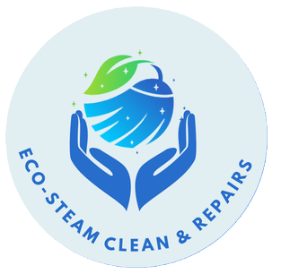
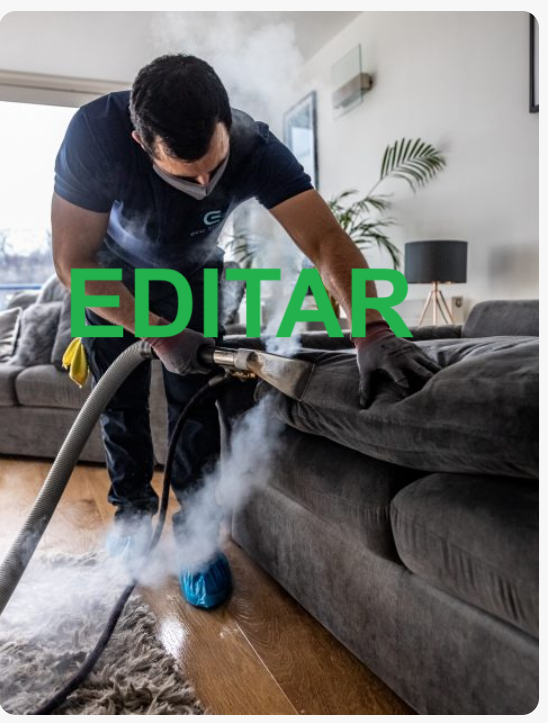
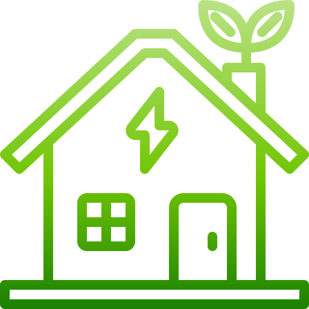
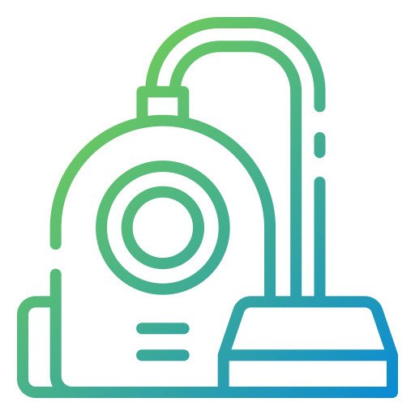
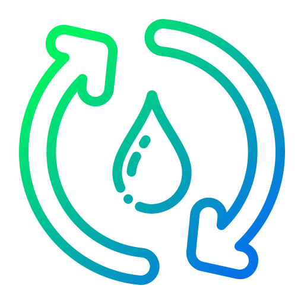
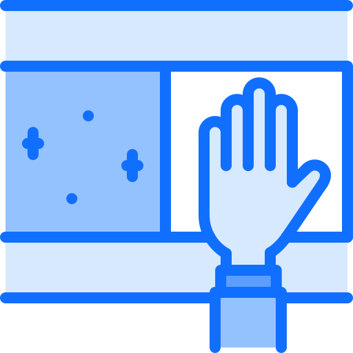
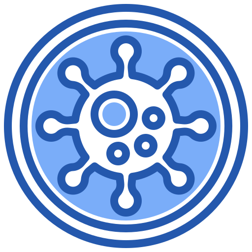
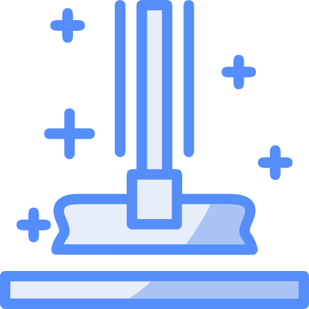
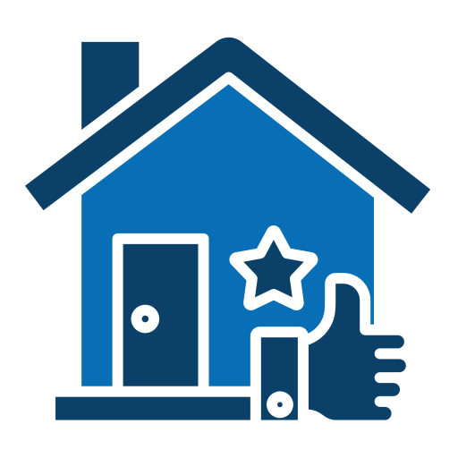
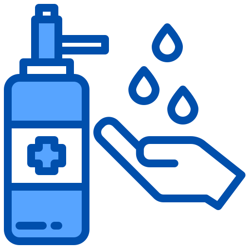

<!DOCTYPE html>
<html lang="nl"></html>
<head>
    <meta charset="UTF-8">
    <meta name="viewport" content="width=device-width, initial-scale=1.0">
    <meta name='robots' content='index, follow, max-image-preview:large, max-snippet:-1, max-video-preview:-1' />
    <link rel="stylesheet" href="styles/General_style.css">
    <link rel="stylesheet" href="styles/style_about.css">
    <title>Over ons</title>
    <link href="https://fonts.googleapis.com/css2?family=Roboto:wght@400;700&display=swap" rel="stylesheet">
    <link rel="stylesheet" href="https://cdn.jsdelivr.net/npm/swiper/swiper-bundle.min.css">
</head>
<meta name="viewport" content="width=device-width, initial-scale=1.0">
<body>
    <header>
        <nav>
            <a href="index_2.0.html" class="logo">
                
            </a>
            <ul class="nav-list">
                <li><a href="index_2.0.html">Start</a></li>
                <li><a href="About_us.html">Over ons</a></li>
                <!-- submenu -->
                <li class="dropdown">
                    <span class="dropdown-title">Diensten  <span class="n_t" > v</span></span>
                    <ul class="dropdown-menu">
                        <li><a href="repair.html" class="category">Reparaties</a> </li>
                        <li><a href="comercial.html" class="category">Schoonmaak</a> </li>
                    </ul>
                </li>
                <!-- submenu -->
                <li class="dropdown">
                    <span class="dropdown-title">Sectoren  <span class="n_t" > v</span></span>
                    <ul class="dropdown-menu">
                        <li><a href="sector1.html" class="category">Huishoudelijk</a> </li>
                        <li><a href="sector2.html" class="category">Commercieel</a> </li>
                    </ul>
                </li>
                
                <li><a href="tel:+31685182236"><i class="fas fa-phone"></i> <span class="tel"> 6 85182236 </span></a></li>
                <li><a href="Contact.html" class="btn_n">Nu reserveren</a></li>
            </ul>
        </nav>
    </header>
    

    <main class="hero">
        <div class="content">
            <h1>Over ons</h1>
            <p>
                Welkom bij Eco Steam Clean & Repairs, een bedrijf voor diepgaande ecologische schoonmaak en reparaties 
                gevestigd in Amsterdam Centrum. We zijn ontstaan met de missie om de schoonmaakindustrie te transformeren, 
                door duurzame en veilige oplossingen te bieden voor zowel onze klanten als het milieu.
            </p>
            <br>
            <h1>Onze missie</h1>
            <p>
                Bij Eco Steam Clean & Repairs geloven we dat schoonmaken niet ten koste mag gaan van de gezondheid van mensen
                of het milieu mag schaden. De traditionele schoonmaakindustrie maakt gebruik van agressieve chemicaliën
                die giftige residuen kunnen achterlaten en de luchtkwaliteit binnenshuis kunnen beïnvloeden. Wij willen dat veranderen.
                Onze missie is om een ecologisch en effectief alternatief te bieden door middel van droog stoomreiniging en 
                duurzame technieken. We zijn gespecialiseerd in het verwijderen van bacteriën, virussen, allergenen en vuil 
                zonder het gebruik van schadelijke chemicaliën, waardoor een veiligere omgeving voor onze klanten en
                hun families wordt gegarandeerd.
            </p>
            <br>
            <p>
                Door onze diensten helpen we huishoudens en bedrijven om hun ruimtes vlekkeloos te houden, 
                hun ecologische voetafdruk te verkleinen en een gezondere levensstijl te bevorderen. We zetten ons in om 
                hoogwaardige, gepersonaliseerde service te bieden die is afgestemd op de specifieke behoeften van elke 
                klant. Daarnaast bieden we onderhouds- en reparatieoplossingen voor woningen en bedrijven, 
                waardoor ruimtes functioneler, comfortabeler en esthetisch verbeterd worden.
            </p>
            <br>
            
        </div>
        <script src="https://cdn.jsdelivr.net/npm/swiper/swiper-bundle.min.js"></script>
        <script src="styles/photos.js"></script>
        <div class="image-container">
            
        </div>
    </main>
    <section class="galeria-section">
        <h1>Galerij: Eco Steam & Repairs Effect</h1>
        <div class="container-galeria">
            <!-- Linker pijl -->
            <div class="swiper-button-prev"></div>
    
            <!-- Swiper carrousel -->
            <div class="swiper mySwiper">
                <div class="swiper-wrapper">
                    <div class="swiper-slide"></div>
                    <div class="swiper-slide"></div>
                    <div class="swiper-slide"></div>
                    <div class="swiper-slide"></div>
                    <div class="swiper-slide"></div>
                    <div class="swiper-slide"></div>
                </div>
            </div>
    
            <!-- Rechter pijl -->
            <div class="swiper-button-next"></div>
        </div>
    </section>

    <div class="features">
        <div class="feature-box">
            
            <h3>Ecologisch</h3>
            <p>We wilden een betere schoonmaakoplossing creëren voor het milieu en daarom gebruiken we een industriële stoommachine.</p>
        </div>
        <div class="feature-box">
            
            <h3>Geavanceerde technologie</h3>
            <p>De droog stoomreinigingsmethode gebruikt alleen water om te reinigen en desinfecteren zonder agressieve chemicaliën.</p>
        </div>
        <div class="feature-box">
            
            <h3>Water efficiëntie</h3>
            <p>Symboliseert onze toewijding aan duurzaamheid bij Eco Steam Clean & Repairs. We gebruiken water bewust om verspilling te minimaliseren.</p>
        </div>
    </div>
    <section class="section_1">
        <h1>Waarom voor ons kiezen?</h1>
        <ul class="s1-list">
            <li>✔ We voeren diepgaande schoonmaak en desinfectie uit die andere conventionele diensten niet kunnen bieden.</li>
            <li>✔ We gebruiken droog stoom en shampoos en reinigingsmiddelen met een neutrale pH voor onze huishoudelijke en residentiële werkzaamheden.
                Dit betekent dat onze methoden veilig zijn voor kwetsbare mensen, zoals ouderen, baby's,
                mensen met ademhalingsstoornissen en zelfs onze geliefde huisdieren. </li>
            <li>✔ We personaliseren elke dienst volgens de behoeften van de klant en het te behandelen oppervlak.</li>
            <li>✔ Onze diensten zijn snel en efficiënt, wat betekent dat je niet lang hoeft te wachten om te genieten van een schone en frisse ruimte.</li>
            <li>✔ We geven om de gezondheid van onze klanten, medewerkers en de milieu-impact van onze praktijken.</li>
            <li>✔ We hebben een getraind en toegewijd team dat streeft naar uitmuntendheid in elke dienst.</li>
        </ul>
        <br>
        <h3>Als u op zoek bent naar advies over een schoonmaakprobleem of als u wilt bespreken hoe we u kunnen helpen een veilige, schone en frisse omgeving te creëren voor uw huis of bedrijf, neem dan contact met ons op 
            door te bellen naar 6 85182236 en we helpen u graag verder.</h3>
    </section>
    <section class="services">
        <h1>Schoonmaakdiensten</h1>
        <a href="repair.html#repair" class="service-box">
            
            <p>Oppervlakte reparatie</p>
        </a>
        <a href="repair.html#sofa" class="service-box">
            
            <p> Montage en installatie van meubels</p>
        </a>
        <a href="suelos.html" class="service-box">
            
            <p>Schimmelbehandeling</p>
        </a>
        <a href="moho.html" class="service-box">
            
            <p>Ecologische stoomreiniging</p>
        </a>
        <a href="arrendamiento.html" class="service-box"></a>
            
            <p>Onderhoud van groene ruimtes</p>
        </a>
        <a href="sanitizacion.html" class="service-box">
            
            <p>Sanitatie</p>
        </a>
    </section>
    
    <section class="section_2">
        <h4>Wat we bieden</h4>
        <br>
        <h1>Diepe ecologische schoonmaak en effectieve reparaties</h1>
        <p>Bij Eco Steam Clean & Repairs zijn we gespecialiseerd in diepgaande ecologische schoonmaak en reparatiediensten met een veilige, efficiënte en duurzame aanpak. Onze toewijding is om oplossingen te bieden 
            die uw huis of bedrijf revitaliseren, herstellen en beschermen zonder het milieu of de 
            gezondheid van onze klanten in gevaar te brengen.</p>
            <br>
        <p>We gebruiken geavanceerde stoomreinigingstechnologie en niet-giftige ecologische producten om een 
            diepe reiniging zonder agressieve chemicaliën te garanderen. Dit stelt ons in staat om verschillende oppervlakken en 
            materialen effectief te desinfecteren zonder schade te veroorzaken of schadelijke residuen achter te laten. Daarnaast bieden we reparatie- en 
            onderhoudsdiensten, zodat uw ruimtes er niet alleen vlekkeloos uitzien, maar ook functioneel blijven 
            en in optimale conditie verkeren.</p>             <br>
        <p>Onze diensten zijn ontworpen om specifieke behoeften aan te pakken in woningen, kantoren, winkels en meer. We zijn gespecialiseerd in:</p>
        <br>
        <h3>Diepe ecologische schoonmaak</h3>
        <ul>
            <li>✔ Hygiënisatie en sanering van residentiële en commerciële ruimtes</li>
            <li>✔ Verwijdering van huishoudelijke allergenen</li>
            <li>✔ Commerciële sanering en schoonmaak</li>
            <li>✔ Ecologische schoonmaak voor kantoren en commerciële ruimtes</li>
            <li>✔ Desinfectie van oppervlakken met veel contact</li>
            <li>✔ Verwijdering van schimmel en bacteriën in afgesloten ruimtes</li>
        </ul>
        <br>
        <h3>Reparaties en onderhoud
        </h3>
        <ul>
            <li>✔ Installatie van laminaat- en PVC-vloeren</li>
            <li>✔ Binnen- en buiten schilderwerk</li>
            <li>✔ Schilderen en repareren van hout</li>
            <li>✔ Badkamerrenovatie</li>
            <li>✔ Keukeninstallatie</li>
            <li>✔ Montage van meubels (kasten, bedden, ladekasten zoals IKEA, enz.)</li>
        </ul>
        <br>
        <h4>Elke dienst wordt gepersonaliseerd volgens de behoeften van de klant, met gegarandeerde onberispelijke resultaten met maximale efficiëntie en minimale milieu-impact.</h4>
        <h4>Als u op zoek bent naar een schonere, gezondere en chemisch-vrije omgeving, staat Eco Steam Clean & Repairs voor u klaar.</h4>
    </section>
    
    <link rel="stylesheet" href="https://cdnjs.cloudflare.com/ajax/libs/font-awesome/6.4.2/css/all.min.css">
    <footer class="footer">
        <div class="footer-container">
            
            <div class="footer-contact">
                
                <p><i class="fas fa-map-marker-alt"></i> Amsterdam</p>
                <br>
                <p>
                <i class="fas fa-envelope"></i> 
                <a href="mailto:green@ecosteamclean.nl">green@ecosteamclean.nl</a>
                </p>
                <br>
                <p>
                <i class="fas fa-phone"></i> 
                <a href="tel:+31685182236">6 85182236</a>
                </p>
            </div>

            <div class="footer-links">
                <h3>Schoonmaakoplossingen</h3>
                <ul>
                    <li><a href="seco-vapor.html">Oppervlakte reparatie</a></li>
                    <li><a href="tapiceria.html">Ecologische desinfectie voor woningen en bedrijven</a></li>
                    <li><a href="azulejos.html">Vlekverwijdering op muren en oppervlakken</a></li>
                    <li><a href="fin-arrendamiento.html">Diepe glasreiniging</a></li>
                    <li><a href="extraccion-cocina.html">Einde huur schoonmaak</a></li>
                    <li><a href="sanitizacion.html">Sanitatie</a></li>
                </ul>
            </div>           

            <div class="footer-links">
                <h3>Belangrijke links</h3>
                <ul>
                    <li><a href="index.html">Start</a></li>
                    <li><a href="sobre-nosotros.html">Over ons</a></li>
                    <li><a href="servicios.html">Diensten</a></li>
                    <li><a href="precios.html">Prijzen</a></li>
                </ul>
            </div>

            <div class="footer-links">
                <h3>Gebieden die we dekken</h3>
                <ul>
                    <li><a href="newcastle.html">Newcastle</a></li>
                    <li><a href="northumberland.html">Northumberland</a></li>
                    <li><a href="puertas-cabeza.html">Puertas de la cabeza</a></li>
                    <li><a href="sunderland.html">Sunderland</a></li>
                </ul>
            </div>
        </div>  
    </footer>
</body>
</html>
